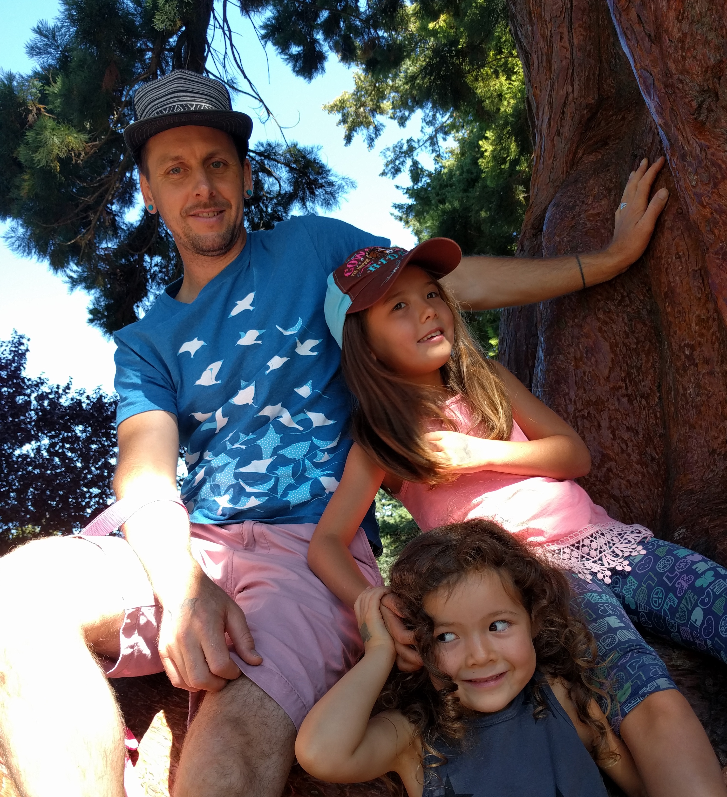

Profiles Sidebar
Blake Wilson

About the Developer
I am Blake. I am a carpenter, timberframer and woodworker by day and a learner of all things web by night. I consider myself a builder with an affinity for artistic expression. Whether the medium be carpentry work for clients, architectural design, my ink doodling, closet singing, or domestic life breadmaking and pickling; to name a few of my interests. It is the process of creating and celebrating and sharing the outcome that get's me up in the morning. That, and the joys of being a father, which pretty much first and foremost takes center stage.
Back to Full Profile